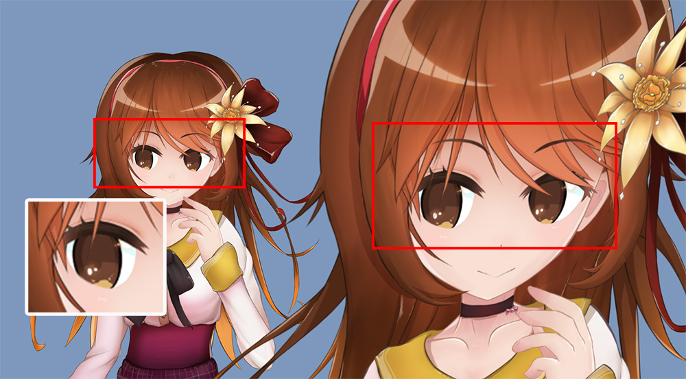

AnyPortrait > Manual > Rendering with Multiple Cameras
Rendering with Multiple Cameras
1.5.0
When composing a game scene, depending on the technique, there are cases where one object is rendered with multiple cameras.
Since characters created with AnyPortrait are composed of Mesh Renderers, there is generally no problem.
However, since the "clipping mask" works in conjunction with cameras, it is easy for it to malfunction in scenes with multiple cameras.
This page explains how to resolve clipping mask rendering errors that occur when there are multiple cameras and when the camera configuration in the scene changes.
Note
The description on this page is also related to the technique of using the camera's render texture.
You can find the description of the camera rendering to the render texture at Related page.
Multiple Cameras in the scene

(1) There is 1 character and (2) 3 cameras in the Unity scene.
(3) Among them, 2 cameras are rendering the character, so the character is rendered twice in the Game view.

When you run the game, you will see that the character's eyes are not rendered properly.
The character's eyes are rendered using clipping masks, and from the second camera onwards, clipping masks does not work properly.
AnyPortrait uses "Render Texture" and "Command Buffer" to render clipped meshes.
"Command Buffer" is a kind of rendering request that is input to the camera.
For the clipping mask technique, the character must find cameras rendering it.
Since objects are usually rendered by one camera, AnyPortrait's character also looks for only one camera by default.
If you want to render with multiple cameras, you need to change the related option.

(1) Open the AnyPortrait editor and press the Bake button.
(2) Select the Setting tab.
(3) Change the value of the "VR / Multi-Camera" option to "Multiple Cameras".
"VR / Multi-Camera" is an option that tells the character the maximum number of cameras to detect.
The values of the option are as follows:
- None: Only one camera is considered to be rendering the character.
- Single Camera and Eye Textures (Unity VR): Unity's VR renders twice with one camera, so separate processing is required. For VR, refer to Related page.
- Multiple Cameras: This value must be set when two or more cameras are rendering the character. Validity is tested for all cameras to create a command buffer.

If you run Bake and go back to the Unity scene and run the game, you can see that the clipping mask is working normally on all cameras as above.
When a camera is added or removed

The rendering issue with the clipping mask also occurs when cameras placed in the scene are added or removed.
Even if the rendering issue with multiple cameras is resolved by changing the settings in Bake, the rendering issue occurs again when cameras are removed and added.
AnyPortrait needs to find cameras and fill command buffers to render clipping masks.
If a new camera is added during the game, the character will need to be made aware of that camera and fill additional command buffers.
That is, making the character aware of "a new camera has been added" and regenerating the command buffers will solve the problem.
There are two ways to do this approach.
The first way is "using a script to directly notify the camera of changes", and the second way is "setting the character to always detect all cameras".
Please refer to the explanation below and use a method that is convenient for you to solve the problem.
Method 1. Write a script
When the number or information of cameras changes, you can solve the rendering problem by calling the "SetRenderingCameras" function of apPortrait.
The "SetRenderingCameras" function tells apPortrait the "cameras that render the character".
You should input only the cameras that render the character as the function argument.
However, since this function includes validation, you can input all cameras in the scene (Camera.allCameras).
Here is an example script that calls that function.
(The code that adds and removes cameras has been omitted.)
using UnityEngine;
using AnyPortrait;
public class CameraChangeScript : MonoBehaviour
{
// Target apPortrait
public apPortrait portrait;
void Update()
{
// Press the A key to add a camera to the scene.
if ( Input.GetKeyDown( KeyCode.A ) )
{
// Add a camera
AddCamera();
// Notifiy the character that the cameras have changed.
portrait.SetRenderingCameras(Camera.allCameras);
}
// Press the S key to remove the camera.
if ( Input.GetKeyDown( KeyCode.S ) )
{
// Remove the camera
RemoveCamera();
// Notifiy the character that the cameras have changed.
portrait.SetRenderingCameras(Camera.allCameras);
}
}
(Omitted..)
}
Method 2. Make it check all cameras

(1) Open AnyPortrait editor and press the Bake button.
(2) Select the Setting tab.
(3) Change the "Check Cameras" option to "All Scene Cameras" and run Bake.
AnyPortrait system automatically rescans cameras when a camera changes during the game and prepares them for clipping mask rendering.
The important thing here is how it detects.
The "Check Cameras" option determines how it detects a camera change in the scene.
- Current Camera Mainly : Rescan cameras only if the current camera is disabled.
- All Scene Cameras : Check all cameras in the scene in every frame. Useful when there are frequent camera changes.

If you apply one of the above methods, you will see that the rendering errors when adding or removing cameras are resolved.
Clipping resolution optimization
AnyPortrait uses "Render Texture" for clipping mask processing.
Generally, a large-resolution render texture will be required for high-quality mask processing.
However, AnyPortrait has an optimization function that can improve the quality of the mask even at low resolutions.
The "Clipping Mask Resolution Optimization" function, which allows high-quality rendering with low-resolution render textures, is performed when all of the following conditions are met.
1. All camera rendering characters must be of type Orthographic.
2. All camera that renders a character must be looking straight at the character.
If the above conditions are not met, the optimization function will not work, and the quality of the clipping mask will be determined by the resolution of the render texture.
The optimization function is implemented to work as best as possible, but in scenes with multiple cameras, the conditions for optimization may not be met.
If you are experiencing this issue, try the following methods to resolve the issue.

(1) Select one of the several cameras that render the character.
(2) Rotate the camera and change it to Perspective type.

You may notice that the clipping mask resolution optimization is not working, causing the character's eye area to be rendered in low quality.

You can improve the rendering quality by increasing the render texture resolution of the clipping mask.
(1) Select the mesh group.
(2) Select the Setting tab.
(3) Select the mesh that is the clipping mask.
(4) Change the Mask Texture Size property. This value is the resolution of the render texture for clipping rendering, so the larger the value, the better the rendering quality.

If you do Bake and run the game, you can see that the quality of the clipping mask has improved.